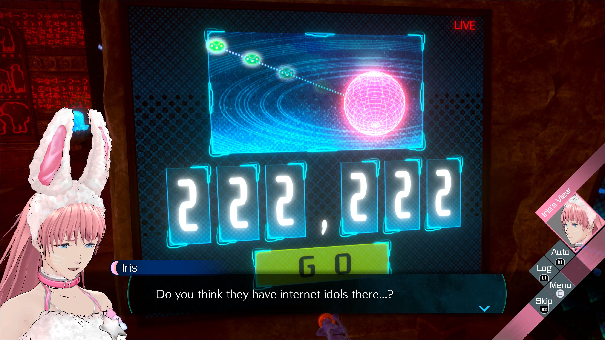
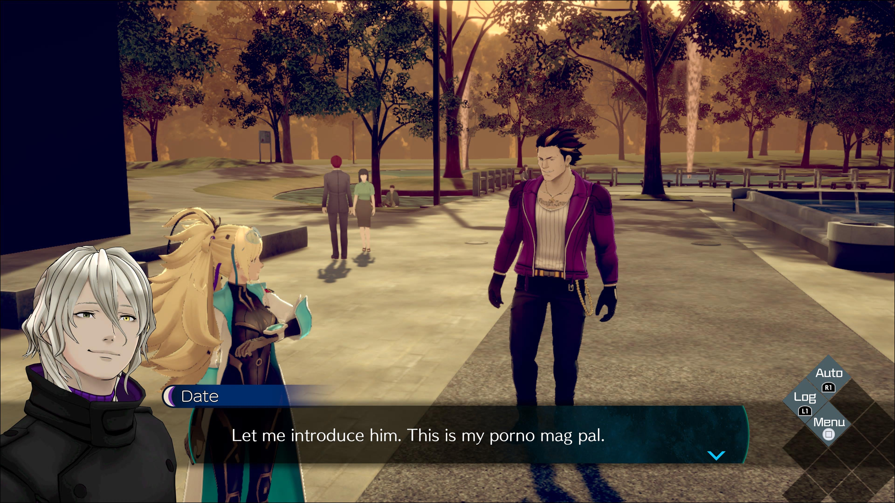
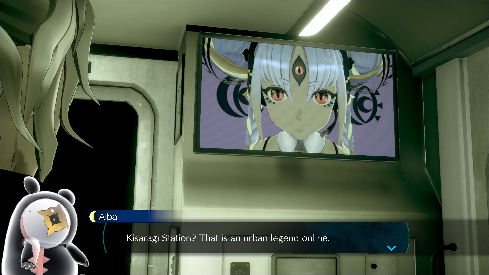
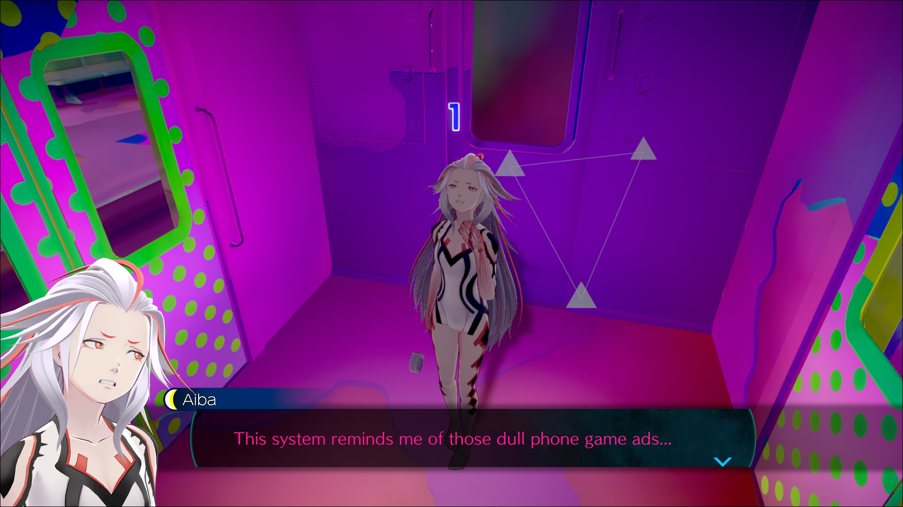
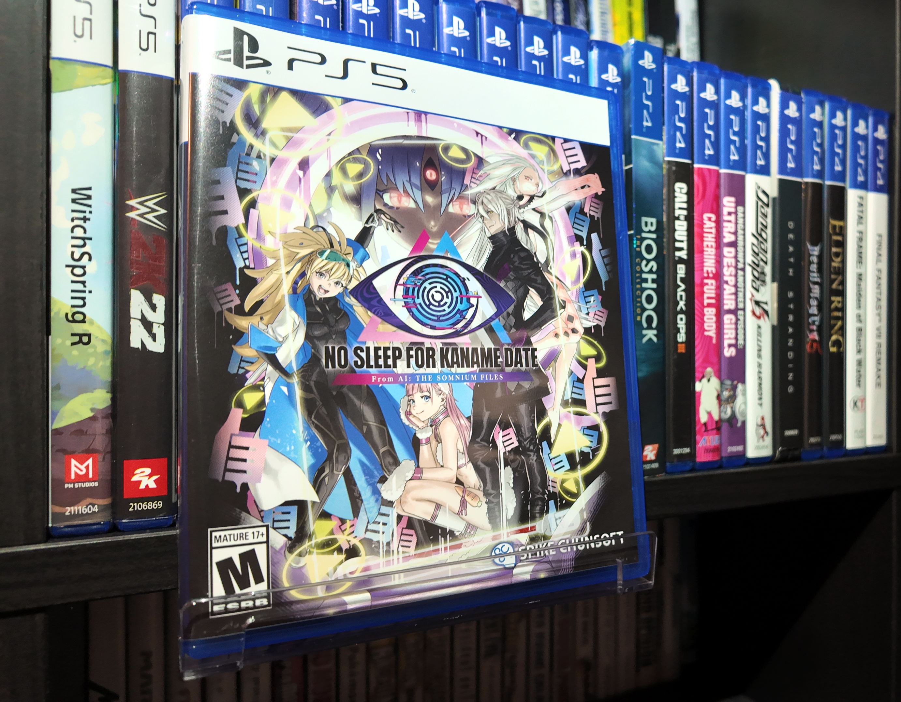

1game1week - Week 9 (3/8/26) - No Sleep for Kaname Date - From AI: THE SOMNIUM FILES
Hey all! It's week 9. I've been having a blast playing a lot of games recently that I'm going to be making posts for here in the near future. Though, man... I'm a little annoyed. Not because of games, just random homelab upkeep. I have my own little computer I keep in a closet and use as a music server, NAS, image server, local VPN etc. It's super nifty and keeps me from having to pay for streaming or storage services like Spotify or Google Drive. Obviously, the cost is offset through manual upkeep and upfront costs. With Google Drive, at least, you don't actually have to worry about the health of the drives, or equipment failure, since it's all SaaS (Software as a Service). The costs are just chip damage from monthly subs. With self hosting, you have to pay for the computer, the drives, any upgrades, pay if a part goes bad... though, you get the benefit that major corporations don't have your personal data, which makes it worth it, in my opinion. I'm complaining here, but it's just to say that one of my drives started making "eep" noises. Anyone that's had that happen probably went "aw man" when reading this. Those noises are the motor within the drive failing to spin the actual disk platters inside. At first, I said, "well, that sucks" and just bought a new drive. Unfortunately these don't really come cheap anymore. AI use by major corps has made pretty much all hardware costs start climbing up, including, unfortunately (and a little surprisingly) high capacity HDDs. https://www.tomshardware.com/pc-components/hdds/hard-drive-prices-have-surged-by-an-average-of-46-percent-since-september-iconic-24tb-seagate-barracuda-now-usd500-as-ai-claims-another-victim This article, for example, highlights a jump from $130 a couple years ago for an 8TB drive to $199. It's insane. All just for slop videos and Twitter ragebait accounts. AI as a whole probably shouldn't have been granted to the public. It's bleak out there. ...So anyways, I spent nearly 200 on an 8TB drive. So imagine my shock when eight days later, I hear an "eep" again. ...From the new drive, weirdly enough. So now this tells me it's likely the power supply. I had at first assumed the drive was just dying because the ones I bought were pretty old. 6 years old or so. Actually, even 6 years seemed a little too low for mechanicals. But... eight days? Surely other hardware must be at fault. Lo and behold. Replacing the power supply made it all work nicely again. Sigh. It's a little frustrating, mostly because while I definitely would've had to buy the power supply anyways, I very likely didn't need the drive. I suppose that jury's still out on that one, actually. Since I've dug a sizeable hole in my wallet already, I figured $20 for a PCIe to SATA adapter would probably not hurt. Somehow, the mATX case I have still let me fit the old drive in there alongside the four other ones in there already (incl. boot drive) so I'll have to try it out. Maybe then I can debate with myself whether or not I'm more interested in expanding my RAID5 array or converting it to RAID6 just for peace of mind. I'm not hurting for space right now, I think... Anyways!New games from 2/26 -> 3/4: - No Sleep for Kaname Date - From AI: THE SOMNIUM FILES (PS5) - Resident Evil Requiem (PS5)
As of 2/26, my yearly backlog was at -14 (lower is better, -1 since last week). And onto 1g1w. A game is considered "beaten" if I've accomplished the main objective of the game, regardless of how many routes / endings I've achieved. However, it's preferable to get all endings if possible! GAME(S): No Sleep for Kaname Date - From AI: THE SOMNIUM FILES (PS5) PLATFORM: PS5 GENRE: Adventure Visual Novel STARTED ON: 2/26 BEATEN ON: 3/1 TOTAL PLAYTIME: 15h8m (Tracked via PS-Timetracker) Given last week I made a post about AINI, it's only right that I make a post about the new Somnium game I picked up. As I mentioned last week, No Sleep for Kaname Date is an "in between" game. 1.5 if you will. It was originally released a month or so after the Switch 2 launch... but unfortunately, it was a Game Key Card. I'm not a fan of Game Key Cards (and just didn't really want to buy it for Switch 1). It has a way smaller scope than either of the two other games. To be completely honest, it was a little disappointing, but that may also be due to this being considered a spinoff title and coming right off two S tier games in the series. This game's protagonist is Kaname Date, and his objective is to find a kidnapped friend, Iris, who is a livestreamer going by the name A-set. During this time, she's being made to take part in "The Third Eye Games", which is a series of escape room situations. It's actually a little funny that I thought of Somnium as an escape room and mentioned it last week, just for this game to... well, have actual escape rooms that are referred to as escape rooms. This game also features Somnium sequences, but they're not really... all that challenging. I'm thinking of the last Somnium in particular. Unlike in the previous games, there's only one route so none of the choices you make really matter all that much in Somnium. To make up for it, there's a few joke / alternate endings that can be achieved through some dialogue options during investigation sections.

Investigation sections were a tad disappointing. Sometimes, these feel just as a means to an end to either pad the runtime, to have cameos of characters from the games that don't have an actual role in the story, or to present options for alternate endings. Visiting Amame during the first investigation sequence, for example, was very little substance-wise, outside of looking at a random poster and setting up a running gag. It's unfortunate, but a lot of these characters just feel as if they're there to say, "I'm in the videogame too!" Some of the great parts of this series is also character interactions. In this game, they were not only few and far between, but just weren't the best. Most of them just boiled down to mentioning how Date is a fan of specific type of magazines or having minor setup for the events of AINI, such as mentioning that Lien is getting a job in a lab.
This is a tiny bit of a spoiler as well so please skip to the next paragraph if that's important, but a major plotpoint in the story was the friendship between two new characters. It's shown as important and something that pretty much sets up most of the story. The problem is... we don't really see any of this going on. It's one thing for me to say, "oh, X and Y are really good friends". It's sort of another thing to say "these two people you don't really know anything about and you never actually see interact are the reason this game is happening". Like, I can buy the former. The latter's just... not really that interesting if I have no background or personal thoughts about it, or if I don't care about these characters as much. I have no emotional stakes here, is all. The best sections here are likely just the escape rooms, and even then, sometimes they just felt a little... hand hold-ey. As in, you'll get a random piece of the puzzle, and then a character will chime in and say "hmm maybe I can use this thing on this other thing so I can unlock that other thing". Come on man. Even if it's obvious, I wanna have the feeling that I figured things out myself. Dialogue like this, especially for a (pseudo) puzzle game, just makes me a little sour on the experience. It weirdly enough felt like backseat gaming from... the game. An amazing part of these sequences, though, were the way they were (for the most part) made to be homages to creepypastas and internet campfire stories. Seeing elevator buttons being hit in a very specific order made me raise an eyebrow at first, but when the game actually hit me with what it was, I laughed a lot. This series has always been a hotbed of internet references and pop culture, but it being this direct about its inspirations was really awesome.
I got a little annoyed due to how these sequences end, however. Essentially, with each escape game section, the last decision (puzzle) is presented as a choice but it's only really presented that way. You don't actually get one. For example, you could get the following choices: - Go through the left door - Go through the right door Then the game will just "cross out" those options and present you with a third one. This is the only one you can actually take. Then, the game transitions you into a puzzle on a timer so you can go through the third option: - Find a way to go through the center door But, you know. It would be interesting to see what the outcomes of those two other options would be, and maybe even make them the way you can go through different routes instead of the Somniums. It's normal, though, given the scope of the game being way smaller than the other two entries, for there to just not be branching paths at all.
For Somnium games, I've always had a tiny bit of talk about JP -> ENG and how tough it must be to translate these games for an English audience. I don't really have anything here localization-wise, so instead I'll talk a little about Hina, who is one of the new characters in this game. I know I just complained about not having enough investment in the new characters, but I really liked Hina. I just think she's neat. Something that caught me by surprise at first was the way she spoke. You can listen here: I found her accent really cute. But I was kind of wondering where / why she spoke like that, so I asked my professor about it. Essentially, ~っす (ssu) is just ~です (desu). This is a Tokyo accent. I would never have guessed, but she just speaks in a polite form and replaces desu with ssu. This form is used to apparently abbreviate a few things, where it can even go from: おはようございます → おはようっす → おはっす → おっす. Languages are funny. English has it's funny things like that as well, so I'm not judging. In this video, some of her dialogue is: それを超えるとっすね。。。→ Sore wo koeru to ssune... → Sore wo koeru to desu ne... ("After that, you know...") 念願叶ったっす！ → Nengan kanatta ssu! → Nengan kanatta desu! ("My wish came true!") 言ってみたかったんっすよ。→ Itte mitakattan ssuyo → Itte mitakattan desuyo ("I've always wanted to say that.") Weirdly, even though it's considered polite speech, it's mostly informal. Apparently it's used mostly by school kids who play sports, and that adults aren't all that common amongst ~っす users. I suppose that's mostly just a fun fact! As a little bit of an off-topic thing, I really enjoyed the included bonus scenario that were mini gag visual novels in the style of Kamaitachi no Yoru. It's rather funny that there's now two games with localized VN modes parodying Kamaitachi no Yoru, but an actual translation for Kamaitachi no Yoru is nowhere in sight (aside from the very westernized Banshee's Last Cry... which was also only available for 32bit iOS so that's no longer available). While definitely not perfect, No Sleep for Kaname Date is a perfectly fine game that had very large shoes to fill. Its biggest failure was simply not wanting to show off more of its own story or really give the player much of a reason to care about its new characters. It mostly feels like a DLC scenario, rather than a full fledged AITSF game. Which would make sense given that the game's files apparently point to this. Who knows!
Thanks for reading! If you need to contact me for any reason, please feel free to email me at aru@hoshikawa-aru.com.